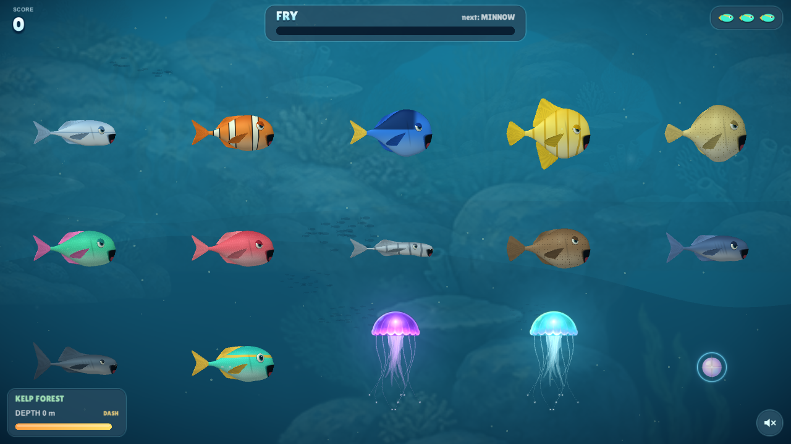

Rounder heads, curved fins, fitted smiles and smoother turns. Feeding now shows a jaw opening, tongue and small predator teeth. A keeps the painted artwork; B uses sculpted skin and clearer light.
Left: improved painted 3D. Right: improved sculpted 3D. The same four-second turning sequence.
All twelve species and feeding poses
A · Painted 3DB · Sculpted 3DA · Feeding poses

B · Feeding poses
Compare with the installed sprite animationHistorical comparison: installed 8dbd365 on the left, previous 3D drafts in the middle and right. The buttons above compare those drafts with this new pass.